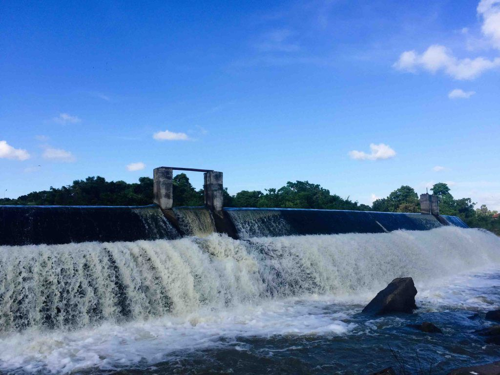

BATTICALOA FORT

Built in the year 1628 by the Portuguese, the Batticaloa Fort is one of the few remaining strongholds of what once was the result of rapid European expansionism that took place during the 17th century. Located on the island of Puliyanthivu, the Batticaloa Fort has switched hands between several colonial powers, namely from the Portuguese to the Dutch in the year 1638, and from the Dutch to the British in the year 1745.
Even today, many of the cannons and other colonial remnants lay scattered overlooking the main city of Batticaloa, which make it possible to reimagine the glory days of when the island was a centre for global trade and governed by a European powerhouse
KALLADY BRIDGE

Batticaloa lagoon is popular for its `Singing Fish’. Amid the time of April to September, a clear but faint melodic sound like plucked guitar ascends from the lagoon waters along the Kallady Bridge. The ambiguous music is ascribed to a noise exuded from some type of marine life discovered in the lagoon. People plunge the end of an oar into the water and hold the opposite end to their ear to tune in to the music clearly.
BATTICALOA LIGHT HOUSE

This historic lighthouse isn’t open, yet you can see it as it puts up as one of the extraordinary places to visit in Batticaloa to capture some beautiful pictures. You can take a boat trip around the inlet to have an incredible perspective of this lighthouse.
UNNICHCHAI DAMP
Visitors can take a short ride over the countryside on the rented bicycles to reach Unnichchai tank. The route goes towards the lagoon from Batticaloa. The view en-route will be charming with a low forest extended over the lagoon. Unnichchai Tank is a classic area. A huge tank that waters most of the valley. The concrete structure of Unnichchai tank controls the waters of Unnichchai. The concrete work copies the stonework of ancients who planned and built this enormous tank.
Discover destinations, find outdoor adventures, follow the journeys of our travel writers around the world, and be inspired.